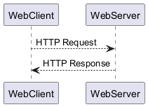
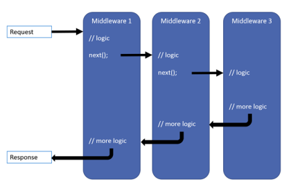

8 HTTP, REST and Express
Ask the AI tutor for this unit. It knows the chapters and exercises of this unit. You can ask in German or English.
You have used HTTP from the browser side for years. This chapter is about the other end: what a request actually contains, and how to answer one with Express.
We build the server step by step, and test every step with the REST Client before adding the next one. One route that you have really called beats four routes that you have not.
8.1 HTTP in three minutes
A client sends a request, a server sends back a response. Both consist of a start line, headers and an optional body.

GET /api/acts?stage=main HTTP/1.1 request line: method, path, query, version
Host: localhost:3000 headers
(empty line)
body - empty for GETHTTP/1.1 200 OK status line
Content-Type: application/json headers
(empty line)
[{"id":"a1","name":"..."}] body8.1.1 Methods
| Method | Meaning | Body | Repeatable without side effects |
|---|---|---|---|
GET |
read | no | yes |
POST |
create | yes | no |
PUT |
replace completely | yes | yes |
PATCH |
change partially | yes | yes |
DELETE |
delete | no | yes |
8.1.2 Status codes
Using these correctly is a competence you are expected to have by the end of this unit.
| Code | Name | Use it when |
|---|---|---|
200 |
OK | the request succeeded |
201 |
Created | a POST created a resource — plus a Location header |
204 |
No Content | success, but there is nothing to return (often DELETE) |
400 |
Bad Request | the client sent nonsense (missing field, invalid value) |
404 |
Not Found | the requested resource does not exist |
409 |
Conflict | the request contradicts the current state (already lent out) |
500 |
Internal Server Error | your code failed |
Rule of thumb: 4xx is the client’s fault, 5xx is yours.
8.2 REST
A resource is a thing your API is about: an act, a tool, a loan. REST says: put the resource in the path (a noun, plural), and the verb in the HTTP method.
GET /api/acts all acts
GET /api/acts/a1 one act
POST /api/acts create one
PUT /api/acts/a1 replace one
DELETE /api/acts/a1 delete one
GET /api/tools/t1/loans the loans of one tool (nested resource)Not REST — the verb belongs in the method, not the path:
GET /api/getAllActs no
GET /api/acts/delete/a1 no
POST /api/createAct no8.2.1 Three ways to pass data
| Looks like | Use for | |
|---|---|---|
| Route parameter | /api/acts/:id |
which resource — required, part of the identity |
| Query parameter | /api/acts?stage=main&sort=time |
filtering, sorting, paging — optional |
| Body | JSON in the request body | the data of the resource, for POST/PUT/PATCH |
8.3 A first Express server
npm install express http-status-codes
npm install --save-dev @types/express nodemonsrc/app.ts:
import express, { Request, Response } from "express";
import { StatusCodes } from "http-status-codes";
const app = express();
app.use(express.json()); // parses a JSON request body into req.body
app.get("/", (req: Request, res: Response) => {
res.send("hello world");
});
app.listen(3000, () => console.log("Server listening on http://localhost:3000"));npm run dev # nodemon restarts on every save:bulb:
express.json()is easy to forget. Without itreq.bodyisundefinedon everyPOST, and you will look for the bug in the wrong place.
8.4 Middleware
Express processes a request through a chain of functions. Each one may answer the request itself, or do a bit of work and hand it on to the next one with next().

Note the way back: after the last one has run, the response travels out through the same chain in reverse order.
app.use((req, res, next) => {
console.log(`${req.method} ${req.url}`);
next(); // forget this and the request hangs forever
});
app.use(express.static("public")); // serve static files from ./public
app.use("/api/acts", actRouter); // mount a router under a path prefixOrder matters. The first matching handler wins.
8.5 Routers
Do not put your endpoints in app.ts. One router per resource, in its own file:
// src/act/act-router.ts
import { Router, Request, Response } from "express";
import { StatusCodes } from "http-status-codes";
import { findAll, findById } from "./act-service";
export const actRouter = Router();
actRouter.get("/", async (req: Request, res: Response) => {
const stage = req.query.stage; // string | string[] | undefined !
res.json(await findAll(typeof stage === "string" ? stage : undefined));
});
actRouter.get("/:id", async (req: Request, res: Response) => {
const act = await findById(req.params.id);
if (act === undefined) {
res.status(StatusCodes.NOT_FOUND).json({ error: `No act with id ${req.params.id}` });
return; // do NOT forget the return
}
res.json(act);
});// src/app.ts
app.use("/api/acts", actRouter);Three things to note:
req.params.idis always astring. Convert and validate it yourself.req.query.stageisstring | string[] | ParsedQs | undefined— a client can send?stage=a&stage=b. Narrow it before use.- After
res.status(...).json(...)you mustreturn. Express does not stop the handler for you, and sending two responses is a runtime error.
8.6 Architecture: router and service
request → router → service → data (file, later: database)- The router speaks HTTP: read parameters, validate input, choose the status code. It contains no business logic.
- The service contains the business logic and loads/stores the data. It knows nothing about HTTP — no
Request, noResponse, no status codes.
That separation is what makes the database unit possible: there you replace the data access inside the service with SQLite, and the router does not change at all.
8.7 DTOs
The objects you send over the wire are not your domain objects. A Tool class has methods and maybe internal state; what goes into the JSON is a plain, flat object — a Data Transfer Object.
export type ToolDto = {
id: string;
name: string;
category: Category;
available: boolean;
};
export function toToolDto(tool: Tool): ToolDto {
return { id: tool.id, name: tool.name, category: tool.category, available: tool.isAvailable };
}Why bother: the DTO is your API’s contract. It stays stable while the model behind it changes, and it lets you leave internal fields out.
8.8 Testing with the REST Client
Put a requests.http file next to your source and use the VS Code REST Client extension. ### separates the requests, and each one gets a Send Request link.
@host = http://localhost:3000
### all acts
GET {{host}}/api/acts
### filtered
GET {{host}}/api/acts?stage=main&sort=time
### one act
GET {{host}}/api/acts/a1
### create a loan
POST {{host}}/api/loans
Content-Type: application/json
{
"toolId": "t1",
"borrower": "Ada Lovelace"
}Keep this file up to date — in the exercises it is part of the hand-in.